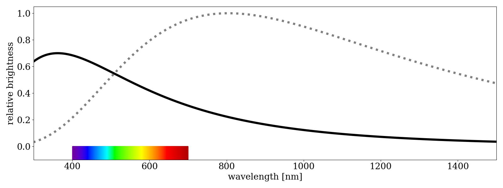
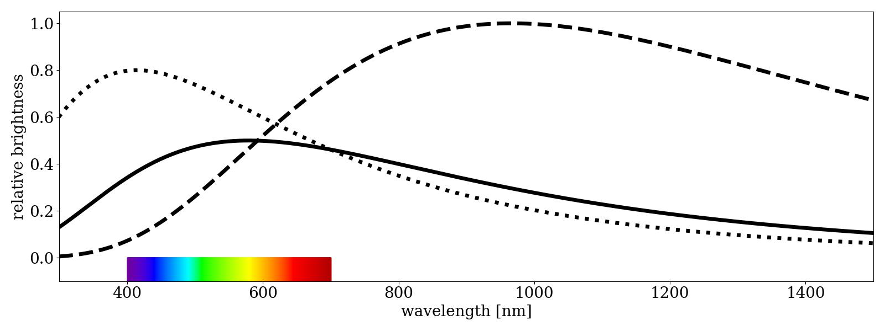
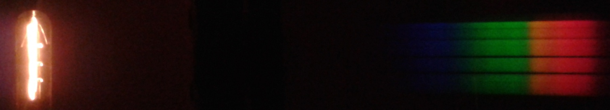
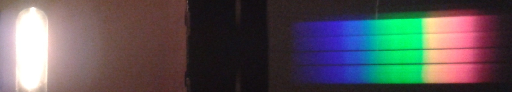

Materials for comparing the temperatures of two dense objects
This page links to materials developed or refined as part of developing the review video + text for comparing the temperatures of dense objects.
Spectra
Python scripts for producing the following plots (code)
Comparison spectra of two mystery objects. Each spectrum is calculated using the Planck function, then arbitrarily scaled to create desired brightness ratio (in this case, making the hotter object dimmer, so as to confront a common misconception that brighter objects must be hotter).

Comparison spectra of three mystery objects, as above but allowing for multiple comparisons that will still confront the "brightness = temperature misconception" (not used in final video)

Photographs
Visible spectrum of a warm incandescent lamp (not used in final video). Diffraction grating was held over camera lens while taking the photo, so that the direct by-eye view of the lamp is on the left and the spectrum is on the right.

Visible spectrum of a hot incandescent lamp (not used in final video). Diffraction grating was held over camera lens while taking the photo, so that the direct by-eye view of the lamp is on the left and the spectrum is on the right.

Simulations
Spectrum constructor (screenshot used for initial graphic in video) allows user to build an arbitrary spectrum including thermal, flat, or no continuous emission, add emission and absorption lines, and Doppler shift. It presents how the object would appear by eye (the blend of colors), through a diffraction grating (which disperses the light by wavelength), and through a spectrometer. (source).